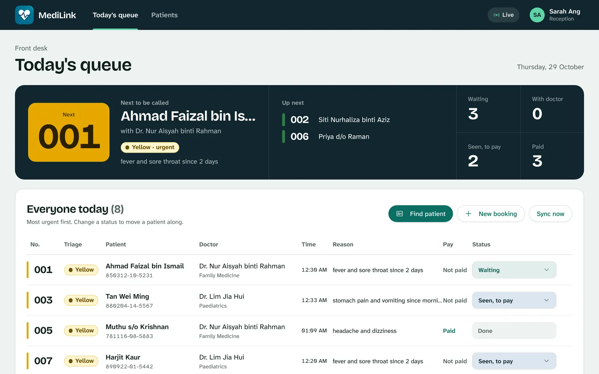
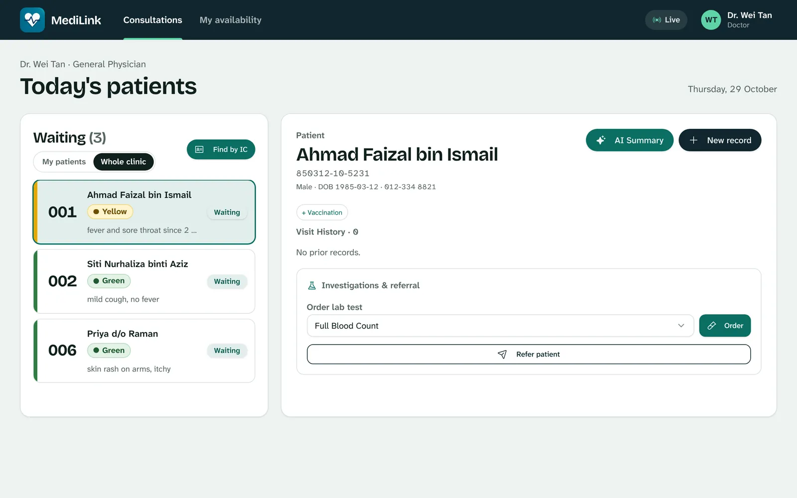
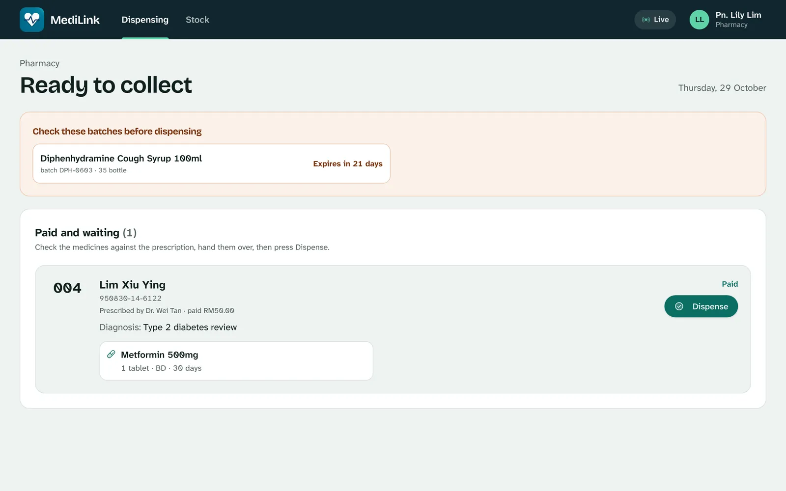
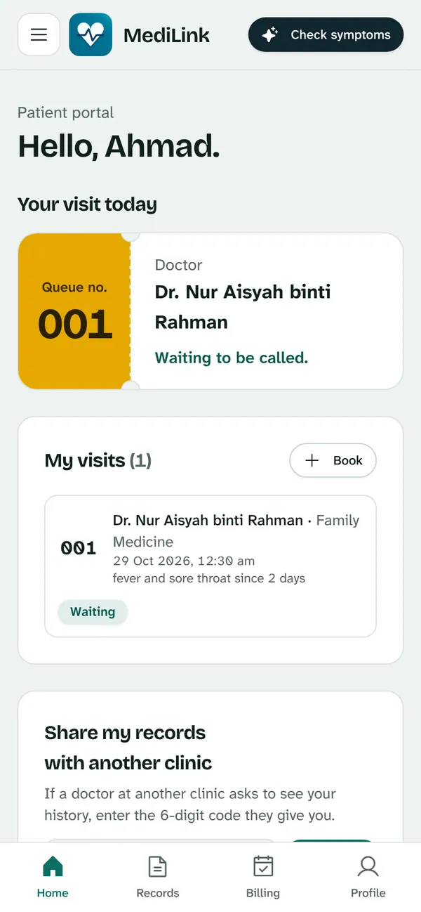

Clinic software that runs on your own computer.
MediLink handles check-in, the queue, consultations, pharmacy and payment for GP clinics in Malaysia. It keeps working when the internet drops, and backs up to the cloud when it's back.
Free for one month. For Windows, Mac and Linux.

A patient's visit, start to finish
Everyone at the clinic works from the same live queue. Pick a stop to see the screen your staff use there.
The patient checks in with their MyKad
On a tablet by the door, the patient types or scans their 12-digit IC number, says what's wrong in Malay or English, and gets a queue number. New patients register in under a minute.
- MediLink suggests a triage colour from the symptoms, including phrases like "sakit dada"
- Your staff make the clinical call and can change it

Reception sees the whole day at a glance
Who's next, who's waiting, who's with the doctor and who still has to pay. Urgent patients rise to the top by themselves.
- Book appointments and walk-ins in the same list
- Change one visit's fee before payment
- Daily cash report for closing the counter
The doctor opens the next patient in one click
The waiting list is sorted by urgency. The record, prescription, MC, lab order and referral are all written from the same screen.
- Prescriptions come from your own stock and prices
- MCs and letters print on your letterhead
- Allergies and past visits shown before prescribing

Medicine is released once it's paid
The patient pays by DuitNow QR at the kiosk or at the counter. When reception confirms the money has arrived, the prescription appears at the pharmacy.
- Stock levels, low-stock and expiry warnings
- Receipts with your clinic's name and registration number

Patients keep their records on their phone
Patients sign in with their IC number to see their visits, results, prescriptions, receipts and MCs.
- Nothing to install: it opens in the phone's browser
- Shows your clinic's name and colour

A waiting-room screen comes with it
Open /board on any TV or spare monitor on the clinic's Wi-Fi. It shows queue numbers, never names, in Malay and English, big enough to read from the back row.

Why clinics choose it
The clinic doesn't stop when the internet does
MediLink runs on a computer at your clinic, so check-in, consultations, payment and dispensing carry on through an outage. Changes upload by themselves when the line comes back.
In our reliability tests we cut the cloud link on purpose: every clinic request was still served through a 60-second outage, and all 8,190 records written offline reached the cloud afterwards.
Your records stay at your clinic
Records are saved on your computer first. Cloud backup is optional and keeps a copy in a database in Asia, where each clinic has its own login and can only ever reach its own records.
Identity card numbers are encrypted before they are stored. Another MediLink clinic sees a patient's history only with that patient's consent.
Patients see your clinic, not ours
Your logo, colour, opening hours, consultation fee, DuitNow QR and letterhead are set in one settings page and appear on every screen, receipt and MC.
No server, no IT contract
One download on the reception computer runs the whole clinic. The kiosk tablet, the doctor's laptop, the pharmacy and the TV only need a web browser on the same Wi-Fi.
Set up in an afternoon
Most clinics are ready the same day. The setup guide walks through each step with pictures of the real screens.
- 1Install on the reception computerUnzip, open MediLink, keep its window open.
- 2Name your clinicClinic details and your administrator login, in two short screens.
- 3Add your staffDoctors, reception and pharmacy each get their own sign-in.
- 4Make it yoursLogo, colour, fee, DuitNow QR and letterhead.
- 5Open the other screensKiosk tablet, doctor's room, pharmacy and TV.
- 6Turn on cloud backupSend us your Clinic ID, paste the key we send back.
Download MediLink
Install it on the computer at reception. Every other screen opens in a browser.
Windows
This looks like your computerWindows 10 or 11, 64-bit
MediLink-Windows-x64.zip
Download for WindowsMac with Apple chip
This looks like your computerM1 or later, macOS 13 or newer
MediLink-macOS-AppleSilicon.zip
Download for MacMac with Intel chip
This looks like your computermacOS 12 or newer
MediLink-macOS-Intel.zip
Download for Intel MacLinux
This looks like your computerUbuntu 22.04 or newer, 64-bit
MediLink-Linux-x64.tar.gz
Download for LinuxTry it free for a month
Run your real clinic on MediLink for one month, with HarNova on hand to help your team.
What you get
- Everything: kiosk, triage, doctor's screen, pharmacy, payment, waiting-room screen and patient app
- Help setting up your staff, fee, letterhead and DuitNow QR
- Cloud backup for the month, with your clinic's own login
- Your records stay on your computer, and stay yours, whether or not you continue
How to start
- Download and install MediLink on the reception computer.
- In Clinic settings, under Cloud backup, copy your Clinic ID.
- Send the Clinic ID to HarNova. We reply with your cloud key and a time to go through the setup with your team.
Questions clinics ask
What happens when the internet goes down?
Nothing changes inside the clinic. Check-in, consultations, payment and dispensing all run on the clinic's computer. Changes wait and upload by themselves when the line returns.
What if the reception computer is switched off?
The other screens need it, so keep it on during clinic hours. Records are safe on its disk while it's off, and the cloud copy is there if the computer ever fails.
Where are patient records kept?
On the clinic's own computer first. With cloud backup on, a copy is kept in a database in Asia where each clinic can only reach its own records. Identity card numbers are encrypted before they are stored.
Does MediLink decide a patient's triage?
No. It suggests a colour from what the patient types so urgent cases stand out. Your staff make every clinical decision and can change the order at any time.
Which devices do I need?
One Windows, Mac or Linux computer to run MediLink. Everything else, such as a kiosk tablet, the doctor's laptop or a TV, only needs a web browser on the same Wi-Fi.
Why does Windows or my Mac warn me when I open it?
The trial build isn't signed with a Microsoft or Apple certificate yet, so the computer asks once before opening it. The setup guide shows exactly what to press.
What does it cost after the trial?
The trial is free. Before it ends, HarNova agrees pricing with each clinic. If you don't continue, you keep your records.